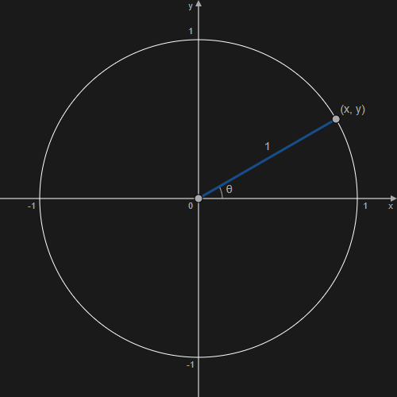
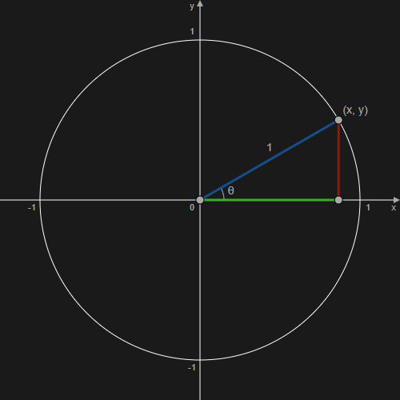

三角関数
コード例
// rad = ラジアン角度
Math.cos(rad);
Math.sin(rad);
Math.tan(rad);
Math.atan(tan);
Math.atan2(y, x);
解説/アルゴリズム
コサイン/サイン（cos/sin）

半径 1 の円を用意して、円の中央位置が原点 (0, 0) になるように配置する。
原点から角 θ の方向に長さ 1 だけ進んだ位置、つまり円周上にある点の位置を求める。
進む距離（上記画像の青線）を 1 と固定すれば、角 θ によって点(x, y)が決まる。
具体的な点(x, y)を求めるには、三角関数の cos / sin という機能を使用する。
cos(角θ) = 角θ方向に1進んだときのx座標を計算する;
sin(角θ) = 角θ方向に1進んだときのy座標を計算する;
通常は、cos(角 θ)を cosθ、sin(角 θ)を sinθ と書く。
cos30° = 30°方向に1進んだときのx座標を計算する
sin30° = 30°方向に1進んだときのy座標を計算する
角度が具体的に決まっている場合、たとえば角度が 30° だと、cos30° / sin30° と書く。
const deg = 30; // 30°
Math.cos(deg); // 角度を指定してはいけない。
const rad = (30 * Math.PI) / 180; // 角をラジアンに変換。
Math.cos(rad); // 正しい値が返却される。
次は実際に JavaScript に実装されている三角関数を使用する。
cos / sin は Math クラスに実装されており、Math.cos() / Math.sin()で利用できる。
引数には角度を指定するが、わたしたちが普段使用している 0° ～ 360° の角度を指定することができない。
代わりにラジアンという単位の角度を指定する。
ラジアンについては専用の記事を用意している。
簡略に説明すると、角度からラジアンに変換するには、角度 * 円周率 / 180 という計算になる。
円周率の値は Math.PI で参照できる。
const deg = 30; // 30°
const rad = (deg * Math.PI) / 180; // 角をラジアンに変換。
Math.cos(rad); // 0.8660...
Math.sin(rad); // 0.5
30° の方向に 1 進んだときの x 座標がおよそ 0.8660、y 座標が 0.5 だということがわかる。
const deg = -30; // -30°
const rad = (deg * Math.PI) / 180; // 角をラジアンに変換。
Math.cos(rad); // 0.8660...
Math.sin(rad); // -0.5
0 を原点とした座標なので、cos/sin の結果がマイナスになる場合がある。
-30° の方向に 1 進んだ y 座標は負数になる。
θ 方向に進む距離を可変にする場合
const r = 5; // 青線の長さ
const deg = 30; // 30°
const rad = (deg * Math.PI) / 180; // 角をラジアンに変換。
Math.cos(rad) * r; // 4.3301...
Math.sin(rad) * r; // 2.5
θ 方向に進む距離を 1 ではなく任意の距離にしたい場合がある。
先に結論をいうと、距離をrと置くと、x 座標はcosθ * r、y 座標はsinθ * rで求まる。

(x, y), (x, 0), (0, 0) を結ぶと、直角三角形ができるのがわかる。
ここで青線の長さを変えた場合、同じように点を結んで、できる形はやはり直角三角形で、角 θ の角度は変わらない。
2 つの三角形を用意して、2 つの角が共通の場合、その 2 つの三角形は形が同じでスケールが違うだけの関係と証明することができ、相似の条件という。
上記画像にある青線の長さ 1 の三角形も、長さを r にした三角形も、角 θ と直角が共通しているので、２つの三角形は相似である、ということがわかる。
相似であると、各辺の比は、辺の長さに関わらず常に同じになるという特徴がある。
青線の長さを 1 から r に変えるということは長さを r 倍にするということなので、相似の三角形の辺である、緑線・赤線の長さも r 倍になる。
緑線・赤線はそれぞれ青線を引いた先の (x, y) に対応する。
なので、青線の長さを r 倍にすると、x (あるいは cosθ ) が r 倍、y (あるいは sinθ )が r 倍になる。
タンジェント（tan）
原点(0, 0)から(cosθ, sinθ)まで直線を引いたときの角度、つまり直線と x 軸とのなす角 θ の傾きを tanθ と表す。
直線の傾きはyの増加量 / xの増加量で求め、tanθ = sinθ / cosθと考えることができる。
アークタンジェント（atan/atan2）
Math.atan(x); // ラジアン値で返却される
atan(x)は tanθ = x となる θ を計算する。
つまり直線の傾きを入れると θ を計算してくれる。
たとえば atan(1) の場合、傾きが 1 となる角度だから 45 度に応じたラジアン値（0.7853...）が返却される。
この関数が返す値の範囲は角度で言うと -90 度～ 90 度までとなる。
というのも、円一周 360 度で考えると、傾きが 1 になる角度は、45 度だけではなく 225 度でも同様だが、これだと atan はどちらを返せばいいのかが分からなくなるので、180 度の範囲で限定されている。
45 度と 225 度を区別するように範囲を 0 ～ 360 度で考えたい場合は、代替となる atan2 という関数を使用する。
Math.atan2(y, x); // ラジアン値で返却される
atan2(y, x) は tanθ = y / x となる θ を計算する。
順番が (y, x) と y を先に指定するので注意が必要。
atan(x) と違い、引数には傾きを求める計算前の (y, x) を指定するので、例えば傾きが 45 度で同じになる (1, 1) と (-1, -1) が区別できる。
タンジェントの逆関数の値を計算したい場合は atan を、点の偏角を求めたい場合は atan2() を使用するとよい。